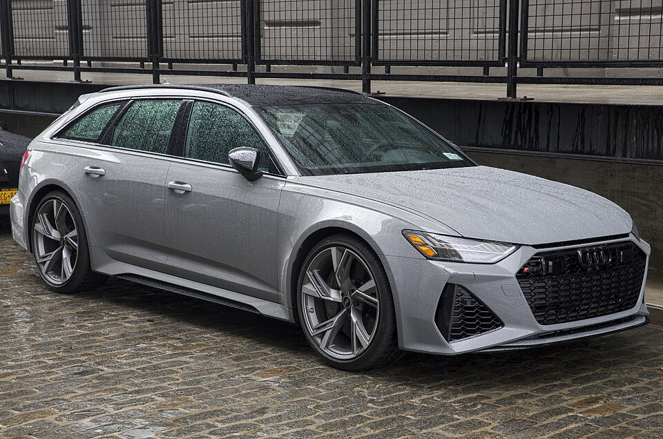

C8 Generation, 2019 — Present | The super-wagon

There is no car quite like the RS6 Avant. It is a station wagon — with five seats, a boot large enough to carry a family's luggage, and the kind of ride quality you can live with every single day — that is also capable of embarrassing sports cars at a traffic light. It is the automotive equivalent of having it all, and Audi has been refining that formula since the first RS6 Avant appeared in 2002.
The C8 generation, launched in 2019, took the concept further than ever before. Wider body, more aggressive styling, and a twin-turbocharged 4.0-litre V8 with a mild hybrid system that produces 600 hp. It weighs over two tonnes. It still does 0–100 km/h in 3.6 seconds. The numbers simply should not make sense.
The heart of the C8 RS6 is a 4.0-litre twin-turbocharged V8 biturbo engine — the same basic unit found in the Lamborghini Urus and various Bentley and Porsche models. In the RS6, it produces 600 hp and 800 Nm of torque, sent to all four wheels through an eight-speed automatic gearbox and Quattro AWD.
The mild hybrid system (MHEV) adds a 48-volt belt alternator starter that recovers energy under braking and can coast the engine at motorway speeds to save fuel. In a car this powerful, the fuel economy figures are still eye-watering — but less eye-watering than they would be without it.
Audi also offered a Performance version from 2023, pushing power to 630 hp and dropping the 0–100 km/h time to 3.4 seconds. A plug-in hybrid variant (PHEV) was also available in some markets, adding an electric motor for a combined 700 hp and genuine electric-only range for urban driving.
Under the wide arches is a chassis that borrows heavily from the Audi sport division's extensive racing knowledge. Air suspension is standard, with adaptive dampers that can transform the car from a long-distance cruiser to a track-day weapon. Active rear-wheel steering — fitted as standard on Performance models — makes the long wheelbase feel much more nimble than it has any right to.
The standard RS6 Avant is 4,995 mm long and 1,951 mm wide. It is a big car. It does not drive like one.
| Engine | 4.0L twin-turbo V8 biturbo + MHEV |
| Power | 600 hp (441 kW) |
| Torque | 800 Nm (590 lb-ft) |
| Drivetrain | Quattro AWD |
| 0–100 km/h | 3.6 seconds |
| Top Speed | 250 km/h (limited) / 305 km/h (optional) |
| Gearbox | 8-speed tiptronic automatic |
| Weight | 2,075 kg |
| Boot capacity | 565 – 1,680 litres |
| Production | 2019 – present |
The RS6 Avant has become something of a cultural touchstone for car enthusiasts. It appears constantly in "best car ever made" discussions online, not because it is the fastest or the most exotic, but because it is the most complete. It can do everything. Track day, school run, motorway cruise, ski trip — the RS6 Avant handles all of it without complaint and without compromise. That kind of breadth is rare in any car at any price. In a station wagon, it is virtually unique.
← Back to Audi